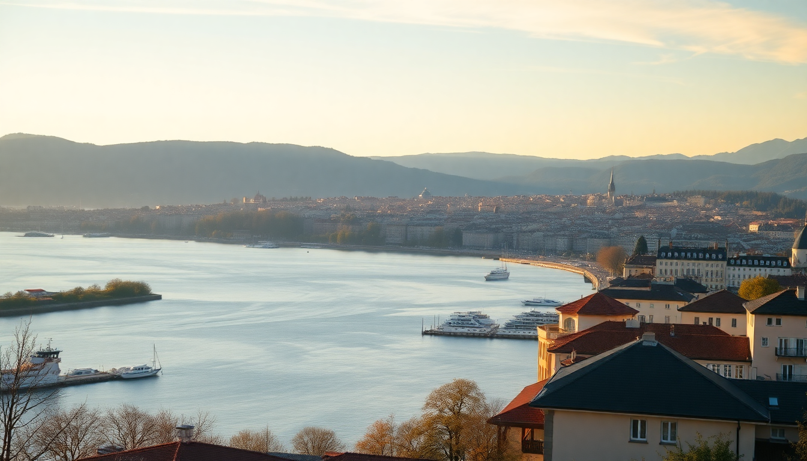

Where to Stay in Geneva: Best Neighborhoods for Every Budget

I’ve spent a fair amount of time in Geneva over the last two years — both on quick layovers and longer work trips. The city is compact, but picking the wrong neighborhood can mean a lot of tram rides or a surprisingly steep hotel bill. Here’s where I’ve actually stayed, what I paid, and which areas I’d recommend depending on your budget and travel style.
Is Geneva walkable, or do I need public transport?
Geneva is very walkable if you stick to the central neighborhoods — everything between the lake and the main train station (Gare Cornavin) is about 20 minutes on foot. But the city also has an excellent tram and bus network. When you check into any hotel, they’ll give you a free Geneva Transport Card for the duration of your stay. That covers all buses, trams, and even the yellow Mouettes boats that cross the lake. We used the trams constantly to reach Carouge and the UN district, and never bought a single ticket.
Where should I stay for my first visit? (Eaux-Vives / Rive Gauche)
Eaux-Vives is the neighborhood I recommend to anyone visiting Geneva for the first time. It’s on the left bank of the lake, just south of the Jet d’Eau. You’re a short walk from the Old Town, but the streets here feel more local — bakeries, wine bars, and small grocery shops instead of souvenir stalls.
We stayed at Hotel N’vY, a solid four-star right near the lake. Rooms were clean and modern, and the breakfast buffet (included) was one of the best I’ve had in Switzerland — fresh croissants, local cheese, and decent coffee. Expect to pay around 250–350 CHF per night for a double in high season.
- Pro tip: Walk down Rue des Eaux-Vives for dinner. We ate at Bistrot du Boeuf Rouge — simple steak-frites, no reservations, packed with locals.
- Budget option: Hotel Les Armures is pricier but sits right inside the Old Town walls. Skip it if you’re on a budget, but worth the splurge for one night.
What’s the most budget-friendly area? (Pâquis / Gare District)
Let’s be honest: Geneva is expensive. But Pâquis, the neighborhood around the train station and Rue de Berne, is where you’ll find the cheapest beds. It’s also the most diverse part of the city — a bit gritty, with kebab shops, late-night bars, and a red-light district that’s active but not dangerous. I felt safe walking here at night, but it’s not the postcard Geneva.
We booked Hotel Central on Rue de la Rôtisserie — basic, clean, and about 150 CHF per night. The room was tiny and the street noise was noticeable, but you can’t beat the location. Five minutes from the station and ten from the lake.
- What to eat: Head to Chez Ma Cousine for roast chicken under 20 CHF. It’s a local chain, but the Pâquis location is reliable.
- Watch out: Avoid the immediate block around Rue de Berne after midnight if you’re traveling with kids. It’s fine during the day.
Which neighborhood feels most like local Geneva? (Carouge)
Carouge is a separate commune that feels like a small Italian town dropped inside Geneva. Narrow streets, red-tiled roofs, independent boutiques, and a proper piazza. It’s about 15 minutes by tram (line 12 or 18) from the city center, which means you’ll be using that free transport card.
We spent a weekend here and loved it. Stayed at Hotel de la Cloche, a no-frills two-star that was clean and quiet — 120 CHF per night, which is a steal for Geneva. The owner gave us a map and marked her favorite spots.
- Best meal: Le Sponti — a tiny Italian place that does a mean pasta alla norma. No website, cash only.
- Best for remote workers: Carouge has several cafés with reliable Wi-Fi. Try Café du Marché on Place du Marché.
Where do diplomats and UN staff stay? (Les Nations / International District)
If your trip is business-related or you want quiet, wide boulevards, and easy access to the UN headquarters, stay in Les Nations. This is the diplomatic quarter, so hotels here are polished and corporate. We booked Hotel Royal near the Palais des Nations — a bit dated but comfortable, with a garden and pool. Around 200 CHF per night.
- Don’t miss: The Broken Chair sculpture outside the UN — it’s more powerful in person.
- Downside: This area is dead at night. No restaurants open past 10 PM, and the nearest bar is a 20-minute walk. Bring a book.
Should I stay near the airport? (Cointrin)
Only if you have a very early flight or a long layover. The Geneva Airport area (Cointrin) is a wasteland of chain hotels and parking lots. We stayed at Ibis Styles Geneva Airport once — it was fine for a 6 AM departure, but I wouldn’t base a trip here. The train to the city center takes 7 minutes, so just stay in town.
- Better alternative: Hotel des Alpes near Gare Cornavin. Same price (around 130 CHF), but you’re in the city.
Which area is best for luxury? (Rive Droite / Old Town)
If budget isn’t a concern, the Rive Droite (right bank) and the Old Town (Vieille Ville) are where you’ll find Geneva’s top hotels. The Four Seasons Hotel des Bergues is the iconic option — lake views, Michelin-starred restaurant, and prices starting around 800 CHF. We didn’t stay there, but we had drinks at the Bar des Bergues and the service was impeccable.
- Mid-range luxury: Hotel Bristol on Rue du Mont-Blanc. Old-school elegance, great breakfast, and often under 400 CHF if you book early.
- Splurge tip: Book a room facing the lake. The city-side rooms are much cheaper but overlook a busy street.
FAQ
Is Geneva safe at night? Yes, overall. Violent crime is rare. The Pâquis district feels rougher but is still safe if you keep your wits about you. Stick to well-lit streets and avoid the park after dark.
How many days should I stay in Geneva? Two full days is enough to see the Old Town, the lake, and one museum. Add a third day if you want to day-trip to Montreux or Chamonix (both about an hour by train).
Do I need to speak French? A little helps, but almost everyone in tourism speaks English. Learn “bonjour” and “merci” — it goes a long way in smaller shops and restaurants.
Conclusion
- First-time visitor? Stay in Eaux-Vives or Rive Gauche — walkable, scenic, and central.
- On a budget? Pâquis or Carouge offer the best value, especially if you use the free tram.
- Business or quiet? Les Nations is calm and convenient for the UN, but dead after dark.
- Luxury? Old Town or Rive Droite — book lake-facing rooms for the real experience.
- Skip the airport area unless you have a morning flight. The train to the center is too short to make it worth the trade-off.